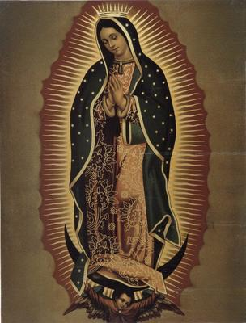

Cada 12 de diciembre, millones de mexicanos —y fieles de todas partes del mundo— celebran el día de la Virgen de Guadalupe, envueltos en una devoción que difícilmente podría explicarse sin una mezcla de fe, tradición e identidad nacional o cultural… y, claro, una ingeniosa estrategia de control colonial. Porque si algo hay que reconocer a los evangelizadores del siglo XVI —con cierta admiración técnica, si se quiere— es su capacidad para construir símbolos capaces de desactivar el pensamiento crítico muy eficazmente.


Lo cierto (y curioso) es que hoy la imagen guadalupana es prácticamente un emblema patrio en la nación mexicana. No aparece en la bandera porque quizás no cabía, pero en lo emocional, para muchos ciudadanos de ese país está justo ahí, entre el águila y la serpiente. Y no hay nada criticable en que cada país abrace símbolos que considere propios; esto, a pesar de que la Virgen de Guadalupe tiene sus raíces mucho más en Cáceres (Extremadura, España), que en el cerro del Tepeyac (al norte de la Ciudad de México).
Sí, porque pocos devotos saben que no existe una sola «Virgen de Guadalupe». En España había, incluso antes de la conquista, al menos siete advocaciones marianas llamadas «Guadalupe»: en Cáceres (la más famosa), en Murcia, en La Gomera, Úbeda, Teguise, Fuenterrabía y Valdivia. La marca «Guadalupe», digamos, ya era bastante conocida. Así que cuando los misioneros decidieron reciclarla en el Nuevo Mundo, no inventaron nada nuevo, sino que sólo aplicaron un tipo de estrategia que hoy podríamos llamar «franquicia religiosa».
Pero además el nombre, para completar el cuadro multicultural, tampoco es de origen indígena: proviene probablemente del árabe wuad al-luben («río oculto») o de la mezcla entre wuad («río») y el latín lupus («lobo»). De Tonantzin nada; de Coatlicue menos. Pero, por supuesto, no hay mejor forma de convertir a un pueblo a una nueva religión, que ofrecerle algo que asimile mejor. Nació así entonces, el gran sincretismo guadalupano: una Virgen española injertada en un paisaje indígena, convenientemente «morena», y con un mensaje que mágicamente sonaba a náhuatl.
Porque para los colonizadores la religiosidad indígena no era un enemigo a exterminar, sino una materia prima a transformar. Y el cerro del Tepeyac, famoso por ser un espacio de culto a Tonantzin, era perfecto para instalar una imagen que facilitara la transición espiritual. ¿Por qué enfrentarse a miles de indígenas desesperados por conservar su cosmos religioso, cuando podían simplemente ofrecerles un reemplazo más cristiano, pero tan familiar que casi ni se notara el cambio?
Y funcionó. Vaya que funcionó. Tanto que hoy la Virgen de Guadalupe es, para millones de personas, mucho más importante que cualquier otra figura católica. Incluso más que el propio «Cristo», quien —hay que decirlo— jamás logró reunir peregrinaciones de diez millones de personas en un solo día.
Pero así llegamos a una de las ironías más extraordinarias del catolicismo moderno: la canonización del personaje conocido como Juan Diego, supuestamente el indígena vidente de las apariciones de 1531. Durante siglos, varios historiadores —incluidos sacerdotes católicos— señalaron que Juan Diego era sólo un personaje legendario. No hay registros contemporáneos sobre él, ni aparece en documentos de la época, y todo el relato guadalupano surge en textos escritos mucho después. En cualquier otra institución, canonizar a un personaje tan dudoso sería motivo de burla. Pero en la Iglesia Católica, fue motivo de fiesta.
Sin embargo, el tema se vuelve todavía más incómodo: ya que fue Juan Pablo II, quizá uno de los líderes religiosos más controversiales del siglo XX, quien decidió canonizar a Juan Diego el 31 de julio de 2002, en pleno corazón de la Basílica de Guadalupe de la Ciudad de México. El mismo Juan Pablo II, cuya reputación se vio gravemente manchada por su encubrimiento sistemático de depredadores de menores dentro del clero. El mismo que, mientras protegía delincuentes reales, decidió otorgar la «santidad» a un personaje que ni siquiera existió.
¿Se dan cuenta? ¡Un santo ficticio canonizado por un protector de depredadores! Más un símbolo nacional nacido de una campaña colonial de conquista y sincretismo religioso. La verdad es que hasta para un historiador resulta difícil dejar de asombrarse ante un fenómeno como éste, que siguió adelante sin que importaran las abismales contradicciones.
Ahora bien, hay que comprender que decir que la Virgen de Guadalupe es un mito útil fabricado a conveniencia, no significa negar su fuerza cultural. Los mitos pueden ser profundamente verdaderos en el corazón de un pueblo, aunque no lo sean en el sentido literal. Nadie puede negar que la devoción guadalupana ha servido para cohesionar comunidades, consolar en tiempos de crisis y dar identidad a generaciones enteras de mexicanos. Eso es real. Culturalmente real.
Pero también es real —históricamente— que esta devoción nació de una hábil estrategia evangelizadora, que se nutrió de sincretismos, que fabricó personajes cuando los necesitó, y que fue reforzada por autoridades eclesiales cuya conducta, digamos, dista mucho de ser ejemplar.
Y sin embargo aun así, la Virgen de Guadalupe sigue ahí, más viva, más mexicana y más influyente que nunca. Tal vez en eso radique su verdadero milagro: en sobrevivir a su propia historia, una historia fabricada con engaños, manipulaciones e hipocresías, que dieron y siguen dando resultado.
[Godless Freeman]
Comentarios
Comments powered by Disqus